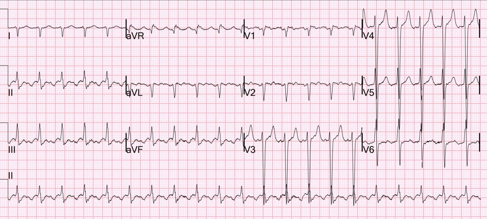
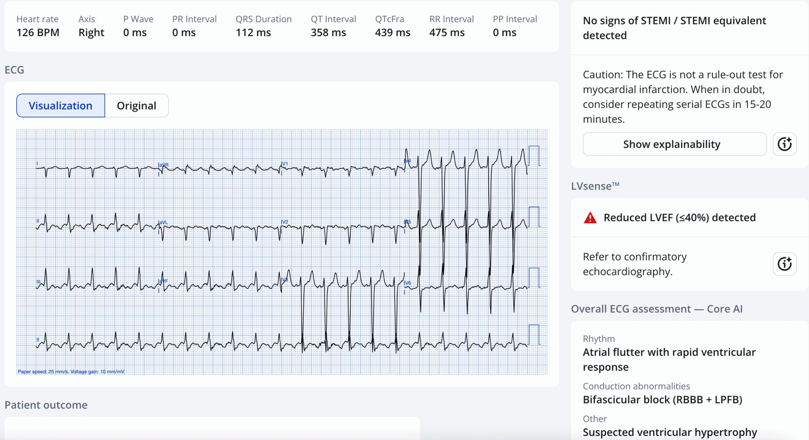
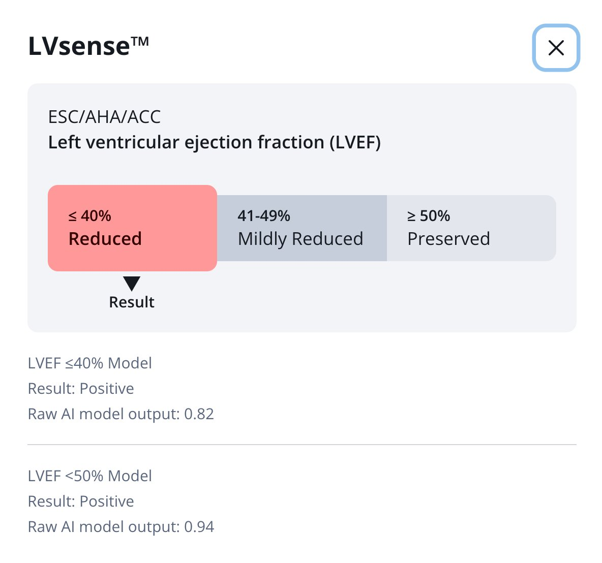
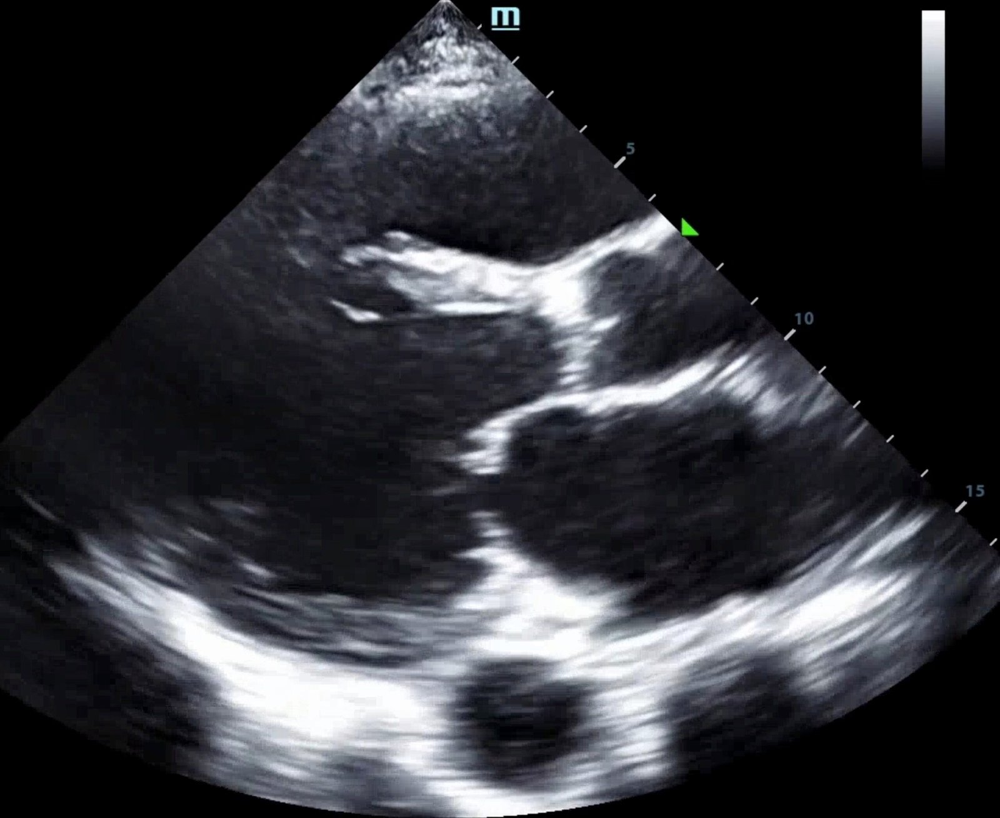
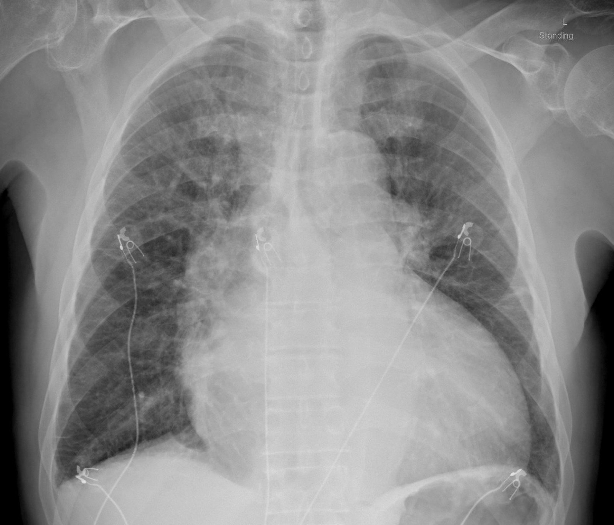
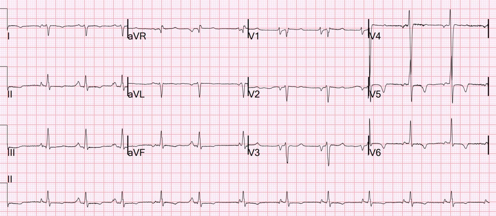
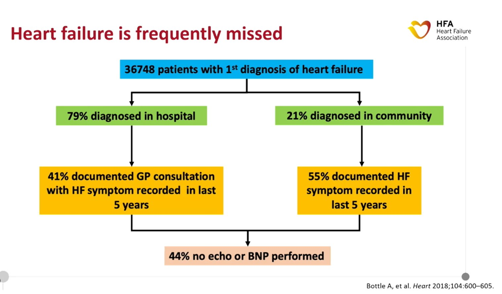
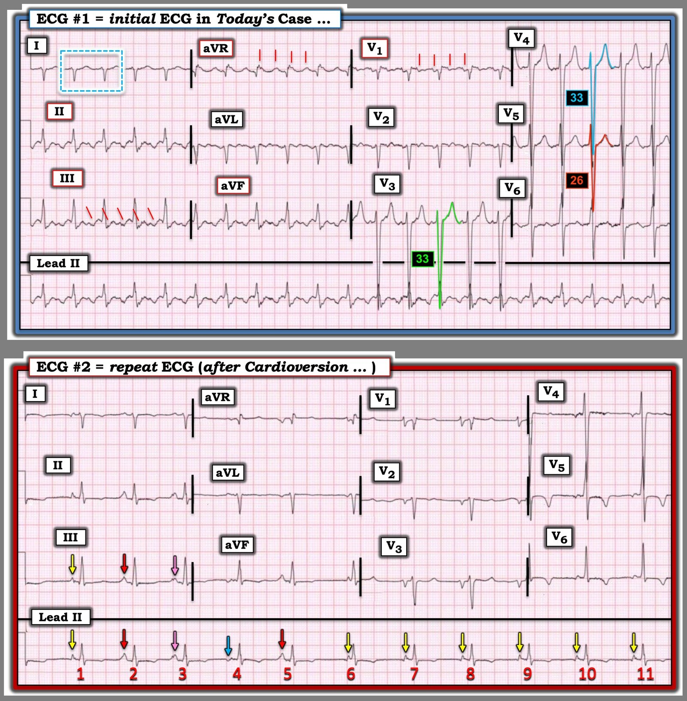

21/09/2025 — Khó thở nhiều ngày. Ngoài cuồng nhĩ hiển nhiên, liệu AI PMCardio có đưa ra được chẩn đoán then chốt trên điện tâm đồ?
Bản dịch tiếng Việt của bài "Several days of Shortness of breath. Other than the obvious atrial flutter, can PMCardio AI make the crucial diagnosis on the ECG?" – Dr. Smith’s ECG Blog. Giữ nguyên toàn bộ 9 hình ảnh của bản gốc.
Một nam giới ngoài 70 tuổi, không có tiền sử đáng kể, đến một phòng khám chăm sóc ban đầu vì khó thở (SOB) tăng dần trong nhiều tuần, nặng lên nhiều trong vài ngày gần đây. Phòng khám ghi một điện tâm đồ được báo cáo là cuồng nhĩ với đáp ứng thất nhanh. Bác sĩ nội khoa kê metoprolol và thuốc kháng đông, rồi cho bệnh nhân về.
Theo những gì tôi biết, không có máy siêu âm nào sẵn có.
Tôi không có điện tâm đồ họ đã ghi, nhưng khi bệnh nhân đến khoa cấp cứu (ED) 2 ngày sau trong tình trạng xấu hơn nhiều, đây là điện tâm đồ của ông:


Bạn nghĩ gì?
Có cuồng nhĩ rõ ràng với dẫn truyền 2:1, tần số thất 126 (vậy tần số nhĩ là 252, hơi chậm đối với cuồng nhĩ). Không có bằng chứng nhồi máu cơ tim cấp hay cũ. Điện thế sóng S ở các chuyển đạo trước tim rất lớn, gợi ý LVH, nhưng không có các bất thường tái cực điển hình của LVH.
Nếu phòng khám đã dùng ứng dụng AI PMCardio Queen of Hearts, kết quả sẽ là như sau:




Cô ấy có thể chẩn đoán chính xác phân suất tống máu thấp! Độ chắc chắn về EF thấp rất cao (0,82 không phải là xác suất 82%, cũng không phải độ nhạy hay độ đặc hiệu 82%. Khó quy đổi con số 0,82 đó thành một con số chính xác nào mà chúng ta hiểu được, ngoại trừ nói rằng rất có khả năng bệnh nhân có EF dưới 40%.)
Nếu bác sĩ phòng khám có sẵn kết quả đánh giá này của PMCardio, ông ấy hẳn đã chuyển bệnh nhân ngay tới khoa cấp cứu vì suy tim mới khởi phát. (Bản thân cuồng nhĩ mới xuất hiện lẽ ra cũng đã phải dẫn tới việc chuyển khoa cấp cứu). Thay vào đó, ông ấy điều trị bệnh nhân bằng metoprolol để làm chậm dẫn truyền AV. Nhưng không nên cho metoprolol trong giai đoạn cấp ở bệnh nhân suy tim mới với EF thấp (thay vào đó, thuốc chẹn beta được tăng liều từ từ để dùng lâu dài trong suy tim phân suất tống máu giảm (HFrEF) sau khi bệnh nhân như vậy đã được ổn định).
Bệnh nhân được cho về từ phòng khám mà không có chẩn đoán EF thấp hay suy tim.
Khi đến khoa cấp cứu 2 ngày sau, khó thở hơn nhiều so với lúc ở phòng khám (có lẽ do metoprolol), các dấu hiệu sinh tồn của ông tương đối ổn và ông không có biểu hiện suy hô hấp. Nhưng rõ ràng về lâm sàng ông đang bị suy tim.
Siêu âm tại giường ngay lập tức cho thấy thất trái rất lớn với chức năng thất trái cực kỳ kém (~10%), nhĩ trái rất lớn, và một số đường B. BNP rất cao (NT-proBNP = 25.000). Troponin phù hợp với bệnh cơ tim mạn tính (hs cTnI ~ 250 ng/L). Lactat là 4,8 mEq/L, và có phù phổi nhẹ.
Với lactat tăng và phù phổi, đây là sốc tim, dù ở mức nhẹ.
Đây là một ảnh tĩnh từ siêu âm tại giường của ông (xin lỗi, tôi không có video):


Bạn có thể thấy thất trái rất lớn và nhĩ trái cũng rất lớn. Nhiều khả năng bệnh cơ tim có trước, dẫn tới tăng áp lực thất trái và nhĩ trái, giãn nhĩ trái, rồi cuồng nhĩ. Tôi nghi rằng cuồng nhĩ có lẽ là biến cố cuối cùng đẩy ông vào suy tim.
X-quang ngực cho thấy phù phổi nhẹ và tim rất lớn (chỉ số tim-ngực trên 50%):


Các bác sĩ điều trị nghĩ rằng làm chậm nhịp tim có thể có ích, nên họ cố giảm dẫn truyền AV bằng esmolol. Điều này gây tụt huyết áp, vì vậy họ chuyển ông tới khu hồi sức nơi tôi đang làm việc. May mắn là esmolol có thời gian bán thải ngắn (đó là lý do họ chọn nó).
Đến lúc này chúng tôi mới biết, từ hồ sơ bên ngoài của lần khám tại phòng khám 2 ngày trước, rằng ông đã được bắt đầu dùng metoprolol cho cuồng nhĩ mà không hề được đánh giá chức năng tim! Như đã nói ở trên, họ cũng đã bắt đầu thuốc kháng đông (nhưng cần nhớ rằng, nếu cần sốc điện chuyển nhịp, điều này sẽ không bảo vệ khỏi huyết khối đã có từ trước)
Chính metoprolol đã làm tình trạng của ông xấu đi và khiến ông phải đến khoa cấp cứu, và thuốc được cho chỉ vì các bác sĩ không nhận ra suy thất trái.
Lẽ ra đã có thể chẩn đoán điều này bằng điện tâm đồ AI PMCardio, tránh được một đợt nằm viện dài và khó khăn.
Bệnh nhân vẫn tỉnh táo, suy nghĩ rõ ràng, da không lạnh ẩm, và huyết áp lúc này là 108/68, nên sốc ở mức nhẹ. Ông cũng thở dễ dàng, nên phù phổi ở mức nhẹ.
Một tâm nhĩ đang cuồng nhĩ không đóng góp đủ vào sự đổ đầy thất trái, kém xa so với nhịp xoang, vì vậy mục tiêu đầu tiên của tôi là sốc điện chuyển nhịp. Trong bối cảnh sốc tim, nguy cơ đột quỵ là đáng chấp nhận. Chúng tôi không làm siêu âm tim qua thực quản (TEE) để tìm huyết khối, thậm chí không tính điểm CHAD(2)DS(2)-VA, vì dù sao ông cũng cần sốc điện chuyển nhịp.
Chúng tôi an thần bằng etomidate và sốc điện chuyển nhịp với 100 J (cuồng nhĩ thường không cần năng lượng cao). Ông đã chuyển nhịp:


Giờ ông đang ở nhịp xoang, nhưng, do metoprolol, và trong bối cảnh thể tích nhát bóp thấp, tần số quá chậm để duy trì cung lượng tim đầy đủ.
Kết quả phân suất tống máu từ ứng dụng AI PMCardio có giống như vậy khi ở nhịp xoang không? Có:

Ông đã cải thiện sau sốc điện chuyển nhịp. Chúng tôi đặt đường truyền tĩnh mạch trung tâm và đường động mạch, và bắt đầu dobutamine. Kế hoạch là thêm nitroprusside để giảm hậu gánh nếu huyết áp tâm thu vẫn trên 120.
Magnus Nossen, một trong các biên tập viên của chúng tôi, bình luận rằng bệnh nhân trong tình huống này (nhịp chậm không thích hợp sau sốc điện chuyển nhịp) có thể được lợi từ tạo nhịp nhĩ tạm thời nhiều hơn là từ thuốc vận mạch.
Đến 4,5 giờ sau sốc điện chuyển nhịp, lactat đã giảm từ 4,8 xuống 2,6, rồi 1,2 sau 14 giờ.
Việc xử trí tiếp sốc tim được tiếp tục tại ICU dưới sự giám sát của khoa tim mạch.
Siêu âm tim chính thức sau đó: Giảm chức năng tâm thu thất trái, mức độ nặng. Phân suất tống máu thất trái ước tính là 20-25%.
MRI: Thất trái giãn lớn nặng cả về kích thước và thể tích, với
khối lượng cơ tim tăng, phù hợp với phì đại thất trái
lệch tâm. Thể tích cuối tâm trương là 366 mL; cuối tâm thu là 303 mL. (Như vậy, thể tích nhát bóp là 63 mL!). Có rối loạn chức năng tâm thu nặng với đặc điểm giảm động toàn bộ, phân suất tống máu 17%, không có rối loạn vận động thành khu trú. (Như vậy đây là bệnh cơ tim không do thiếu máu cục bộ — nếu do thiếu máu cục bộ, sẽ có rối loạn vận động thành.)
Bình luận về phân suất tống máu so với thể tích nhát bóp: điều này cho thấy vì sao một người bị bệnh cơ tim mạn tính có thể vẫn hoạt động được với EF 17%, trong khi một người khỏe mạnh đột ngột bị nhồi máu cơ tim cấp với EF 17% sẽ bị sốc hoặc tử vong. 17% của 366 mL là 62 mL. 17% của 100mL là 17 mL. Chính thể tích nhát bóp quyết định cung lượng tim, và thể tích nhát bóp được quyết định bởi CẢ EF lẫn thể tích cuối tâm trương.
Cuối cùng bệnh nhân hồi phục tốt. Ông được xuất viện với GDMT (điều trị nội khoa theo mục tiêu — Goal Directed Medical Therapy) cho suy tim phân suất tống máu giảm. Entresto, Hydralazine, Bumetanide, Apixaban, Metoprolol, Empaglifozin (thuốc ức chế SGLT-2), Spironolactone.
Nếu PMcardio đã được dùng tại phòng khám, EF thấp (<40%) hẳn đã được phát hiện, bệnh nhân sẽ không bị cho về, và việc chẹn beta đã được tránh, thay vào đó là chuyển khoa cấp cứu khẩn và đánh giá huyết động.
Điểm cần học:
- Bệnh nhân sốc tim kèm rối loạn nhịp được lợi từ việc khôi phục nhịp xoang, khi có thể. Nguy cơ đột quỵ nhỏ nhưng có thật trong trường hợp như vậy phải được chấp nhận.
- Cân nhắc tạo nhịp nhĩ tạm thời ở bệnh nhân bị nhịp chậm xoang sau sốc điện chuyển nhịp cuồng nhĩ hoặc rung nhĩ, khi nhịp chậm đó là do chẹn beta và cuối cùng sẽ hết tác dụng.
- Ứng dụng điện tâm đồ AI PMCardio có thể chẩn đoán phân suất tống máu thấp với độ chính xác rất cao. Trong một báo cáo gần đây tại hội nghị ESC ở Madrid, ứng dụng cho thấy ở một quần thể sàng lọc (đoàn hệ Framingham!! – không có triệu chứng), giá trị tiên đoán dương (PPV) là 33% và giá trị tiên đoán âm (NPV) là 98%. Ở bệnh nhân có triệu chứng, PPV sẽ cao hơn nhiều.
- CUỐI CÙNG: Tại các phòng khám, suy tim thường bị bỏ sót. Hãy dùng ứng dụng AI hoặc siêu âm tim tại giường thay vì bỏ sót nó!


= = =
======================================
BÌNH LUẬN CỦA TÔI, bởi KEN GRAUER, MD (21/9/2025):
Ca hôm nay đặt ra câu hỏi bệnh nhân rối loạn nhịp nào cần nhập viện. Dù hoàn toàn thừa nhận vai trò dễ dàng hơn nhiều của tôi khi xem lại ca hôm nay từ sự thoải mái của màn hình lớn máy tính để bàn trong văn phòng tại nhà — tôi nghĩ việc xem xét lại một số quyết định đã được đưa ra trong ca hôm nay là quan trọng.
Điểm #1: Rất khó kiểm soát chất lượng chỉ dựa trên việc xem lại hồ sơ bệnh án. Các dấu hiệu chủ quan có thể được bác sĩ viết theo cách “che chắn” cho bất kỳ chẩn đoán ra viện cuối cùng nào. Và trong ca hôm nay — Chúng ta thiếu dữ liệu khách quan (tức là, Chúng ta không được xem điện tâm đồ ghi tại phòng khám chăm sóc ban đầu vào lúc bệnh nhân hôm nay đến khám lần đầu).
Điểm #2: Dù vậy — Chúng ta được biết rằng một người đàn ông ngoài 70 tuổi trước đó khỏe mạnh đến khám vì “khó thở tăng dần“. Một điện tâm đồ được ghi và báo cáo là “cuồng nhĩ (AFlutter) với đáp ứng thất nhanh. Bệnh nhân được kê thuốc chẹn ß và thuốc kháng đông — rồi được cho về nhà.
- Nhận định của tôi: Nhìn qua “kính hồi cứu” (tức là, ngồi thoải mái trên ghế văn phòng) — bệnh nhân này lẽ ra không nên được cho về nhà. Câu hỏi thứ 1 cần đặt ra là VÌ SAO một người đàn ông ngoài 70 tuổi trước đó khỏe mạnh lại xuất hiện cuồng nhĩ mới với đáp ứng thất nhanh?
- Theo cách tiếp cận được đề xuất bởi Stiell và Eagles (Clin Exp Emerg Med 11(2):213-217, 2024) — Ưu tiên số 1 khi đánh giá bệnh nhân đến khoa cấp cứu vì cuồng nhĩ mới là xác định XEM cuồng nhĩ là rối loạn nhịp nguyên phát hay là rối loạn nhịp thứ phát do một nguyên nhân nội khoa?
- Rối loạn nhịp nguyên phát thường được gợi ý khi triệu chứng khởi phát đột ngột (tức là, hồi hộp đánh trống ngực) — trong trường hợp này kiểm soát tần số hoặc kiểm soát nhịp mà không nhất thiết phải nhập viện có thể là những lựa chọn phù hợp.
- Sốc điện chuyển nhịp bằng dòng điện một chiều (DCCV — Direct Current CardioVersion) từ lâu đã được xác lập là một thủ thuật an toàn khi được thực hiện tại khoa cấp cứu bởi các bác sĩ cấp cứu có năng lực cho một rối loạn nhịp nguyên phát biểu hiện là rung nhĩ hoặc cuồng nhĩ mới khởi phát trong vòng 48 giờ trước đó (Carpenter và Sargent — BMJ Open Qual 7(4):e000260, 2018).
- Ngược lại (theo tài liệu tham khảo của Stiell và Eagles đã dẫn ở trên) — cuồng nhĩ mới với đáp ứng thất nhanh ở bệnh nhân khó thở tăng dần, nhất là ở một người lớn tuổi trước đó khỏe mạnh, không phải là bệnh sử của một rối loạn nhịp nguyên phát, mà là của cuồng nhĩ thứ phát xuất hiện do một rối loạn nội khoa nền nào đó như thiếu máu do xuất huyết tiêu hóa, thuyên tắc phổi, suy tim, v.v. Trong những trường hợp như vậy — việc đánh giá tại bệnh viện xem vì sao bệnh nhân này giờ lại có cuồng nhĩ mới là thiết yếu.
= = =
2 điện tâm đồ trong CA BỆNH hôm nay:
Để rõ ràng, trong Hình 1 — tôi đã tái hiện và đánh dấu 2 điện tâm đồ ghi ở bệnh nhân hôm nay. Tôi tập trung bình luận vào một số dấu hiệu thú vị trong 2 bản ghi này.
Điện tâm đồ ban đầu hôm nay — Nhận thấy rằng chúng ta không có điện tâm đồ thực sự vào lúc bệnh nhân này đến phòng khám chăm sóc ban đầu lần đầu — có lẽ nó trông giống với điện tâm đồ #1 ghi 2 ngày sau khi bệnh nhân đến khoa cấp cứu.
- Như Dr. Smith đã nêu — nhịp là cuồng nhĩ với dẫn truyền AV 2:1 (Tần số thất ~130/phút — với tần số cuồng = 130 X 2 ~260/phút) — và không có dấu hiệu nhồi máu cơ tim mới hay cũ.
- Hai dấu hiệu bổ sung trong điện tâm đồ #1 là: i) LVH (sóng S sâu rõ rệt ở các chuyển đạo V3,V4,V5 — dễ dàng thỏa tiêu chuẩn Peguero cho LVH — BẤM VÀO ĐÂY để xem bài tổng quan của tôi về Tiêu chuẩn LVH); và, ii) RVH (tức là, Sự hiện diện của phức bộ rS hẹp ở chuyển đạo I với phần âm chiếm ưu thế đi kèm tiêu chuẩn điện thế QRS rõ rệt cho LVH cho thấy RVH cho tới khi chứng minh được điều ngược lại).
- Nhận định lâm sàng: Ngay cả trước khi nhờ đến khả năng tuyệt vời của AI trong đánh giá chức năng thất trái — cuồng nhĩ mới với đáp ứng thất nhanh ở bệnh nhân phì đại hai thất lẽ ra phải ngay lập tức gợi ý bệnh cơ tim (và cùng với đó là sự cần thiết phải chuyển người đàn ông ngoài 70 tuổi này, với khó thở “tăng dần” và điện tâm đồ như vậy, đến bệnh viện để đánh giá đầy đủ).
- ĐIỂM THEN CHỐT (PEARL): Như Dr. Smith đã nêu — chẩn đoán cuồng nhĩ với dẫn truyền AV 2:1 ở điện tâm đồ #1 là hiển nhiên với những ai trong chúng ta quen đọc rối loạn nhịp hằng ngày ở khoa cấp cứu. Dù vậy — cuồng nhĩ vẫn là rối loạn nhịp hay bị bỏ sót nhất (bỏ xa các loại khác theo kinh nghiệm của tôi!). Để dễ nhận ra rối loạn nhịp có nhiều bộ mặt này, hãy cân nhắc những điều sau: i) Hãy nhớ thống kê (tức là, cuồng nhĩ rất hay bị bỏ sót) — do đó, nếu bạn gặp một nhịp SVT đều ở khoảng ~130-170/phút nhưng không có dấu hiệu rõ của sóng P xoang (tức là, không có sóng P dương rõ ở chuyển đạo II) — thì Hãy nghĩ tới cuồng nhĩ cho tới khi chứng minh được điều ngược lại! — ii) Hãy nhìn vào các “chuyển đạo ưu tiên” của tôi để phát hiện hoạt động nhĩ kín đáo (tô ĐỎ trong điện tâm đồ #1 = các chuyển đạo II,III,aVF; chuyển đạo aVR; và chuyển đạo V1). Nếu bạn tập trung vào một hoặc vài chuyển đạo này trong một SVT ở khoảng ~130-170/phút nhưng không có sóng P xoang — Bạn sẽ thường thấy hoạt động 2:1 của cuồng nhĩ (được đánh dấu trong điện tâm đồ #1 bằng các vạch nghiêng màu ĐỎ). Điểm cộng: Sau đó bạn có thể chứng minh cuồng nhĩ 2:1 trong chưa đầy 5 giây bằng cách lấy compa đo (calipers) ra để xác nhận hoạt động 2:1 chính xác của các sóng mà tôi đánh dấu bằng các vạch nghiêng màu ĐỎ.
= = =
Điện tâm đồ ghi lại hôm nay — Sau sốc điện chuyển nhịp đồng bộ cuồng nhĩ của bệnh nhân này — một nhịp trên thất ổn định hơn nhiều và chậm hơn đã được khôi phục ( = điện tâm đồ #2, như trình bày bên dưới trong Hình 1).
- Về mặt kỹ thuật — nhịp trong điện tâm đồ ghi lại này không phải là nhịp “xoang”. Thay vào đó, như các mũi tên màu đánh dấu sóng P trong Hình 1 cho thấy — có nhiều hình thái sóng P khác nhau.
- Tôi nghi các sóng P có mũi tên ĐỎ là 2 sóng P xoang trong điện tâm đồ #2 — vì đây là các dạng sóng P dương rõ ràng trong bản ghi này. Hình dạng khá cao, nhọn của các sóng P này ở các chuyển đạo dưới (tức là, ở các nhát #2 và #5) — gợi ý bất thường nhĩ phải (RAA), phù hợp với bệnh cơ tim giãn của bệnh nhân này.
- Sự thay đổi hình thái sóng P từ nhát này sang nhát khác mà chúng ta ghi nhận ở 5 nhát đầu trong điện tâm đồ #2 gợi ý một dạng biến thể (chậm hơn) của nhịp nhĩ đa ổ — vốn thường gặp ở bệnh nhân có bệnh lý tim phổi nền.
- Hình thái sóng P ở 6 nhát cuối trên dải nhịp DII dài của điện tâm đồ #2 cuối cùng đã ổn định. Về mặt kỹ thuật, đây không phải là sự tái lập nhịp “xoang” — vì mỗi sóng P trong 6 sóng P cuối này đều có một sóng lệch âm ban đầu nhỏ-nhưng-có-mặt, cho chúng ta biết các sóng P này không xuất phát từ nút xoang (SA). Thay vào đó — ổ nhĩ lạc chỗ này bắt đầu ngay trước nhát #6 (Nhát #6 thực ra là một nhát thoát bộ nối — vì khoảng PR của nó quá ngắn để dẫn truyền).
- Xin nhấn mạnh: Ý nghĩa lâm sàng của nhịp trong điện tâm đồ #2, về mặt thực hành, giống như khi kết quả sốc điện chuyển nhịp là nhịp xoang. Do đó, nhịp sau chuyển nhịp này thực ra là một đáp ứng tuyệt vời với sốc điện chuyển nhịp cuồng nhĩ của bệnh nhân này — và tôi rất nghi rằng nhịp xoang thực sự sẽ trở lại khi tình trạng suy tim cấp nền của bệnh nhân tiếp tục cải thiện.
Hình 1: Tôi đã tái hiện và đánh dấu 2 điện tâm đồ của ca hôm nay.


= = =